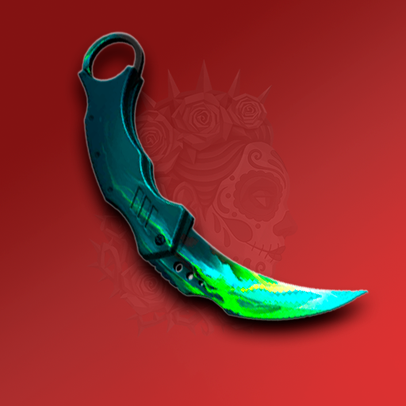

Иконка игры (512×512)

Коротко об игре
Добро пожаловать в Кейс Симулятор с крутыми скинами в 3D, кучей голды и кейсами!
- ⚡ Открывай кейсы, боксы, стикер паки и чарм паки
- 📝 продавай и покупай предметы на рынке
- 🎯 Играй в крутые мини-игры
- 🎲 Осматривай крутые скины полнотью в 3D
Расширенное описание
Представляем вашему вниманию крутой Кейс Симулятор стандофф открытия кейсов: открывай кучу кейсов, выбивай красивые скины, осматривай их в 3D, кастомизируй их как хочешь. Играй в различные мини-игры и зарабатывай голду для открытия новых кейсов и покупки дорогих скинов. Только в этом кейс симуляторе стандофф ты можешь:
- открывать кейсы, боксы, стикер паки и чарм паки;
- продавать и покупать предметы на рынке;
- играть в различные мини игры;
- а также осматривать предметы в 3D с крутой графикой!
В Кейс Симуляторе для стандофф реализованы все механики оригинала, так что скачивай и пробуй! Что отличает этот симулятор стендофф? Полный список:- Крутой 3д осмотр с красивой графикой;
- Огромное количество коллекций;
- Интересные мини-игры и заработать голду;
- Кучу разных развлечений;
- Наклейки, которые можно наклеить на оружие
- Чармы (или брелки), которые имеют физику и их тоже можно повесить на оружие
- Рынок с фильтрами, где можно найти любой предмет;
- Крафты, статтреки, прокачка, кликер и кучу других механик, которые не дадут заскучать прямиком из шедевростендоффчика
- Куча эмоций